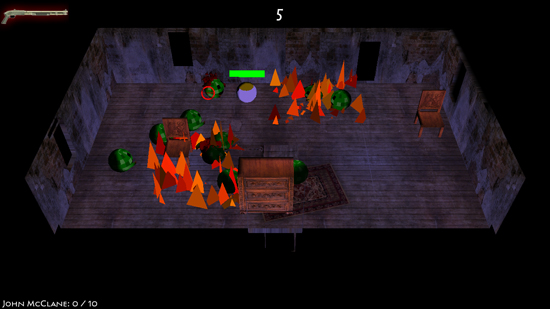
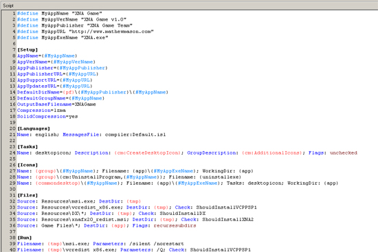

Save Your Brains!
Posted by Mathew on December 16th, 2008

Zombie Horde Action
Downloads:
Team Reanimated:
- Programming
- 3D Art
- Design
- Audio
Platform:
Made using Microsoft's XNA 2.0 Framework
Notes:
Made first as an entry for the second GameJam of our 2008 Fall semester here at MSU, and then later modified for a class project, this is the first effort of my new core team in several areas, including group AI, simple physics, and networking. While we haven't optimized much of the net code, it works fairly well for the 2 player limit we've imposed, especially via LAN connections. Of particular note is the art in the game. Originally our 3D artist, Marie, had worked up some impressive, skinned, animated models for use, but some unforseen problems involving Blender and XNA forced us to use our backup programming art, which is seen in the player, zombie, gas cans, and flames, as well as 3D particles used for zombie brains. Our programmer artist was Adam Starks (mentioned above).
Posted in Personal, Game
XNA 2.0 Installer
Posted by Mathew on December 16th, 2008

XNA Installer Script
Downloads:
This is a script I worked up using some community resources to build installers for games based on Microsoft's XNA 2.0 framework. Inside the archive linked above you'll find a PDF readme that should explain more, along with links to resources I used and some suggested improvements for the future.
Posted in Personal, Game
Archive:
Category:
Type: